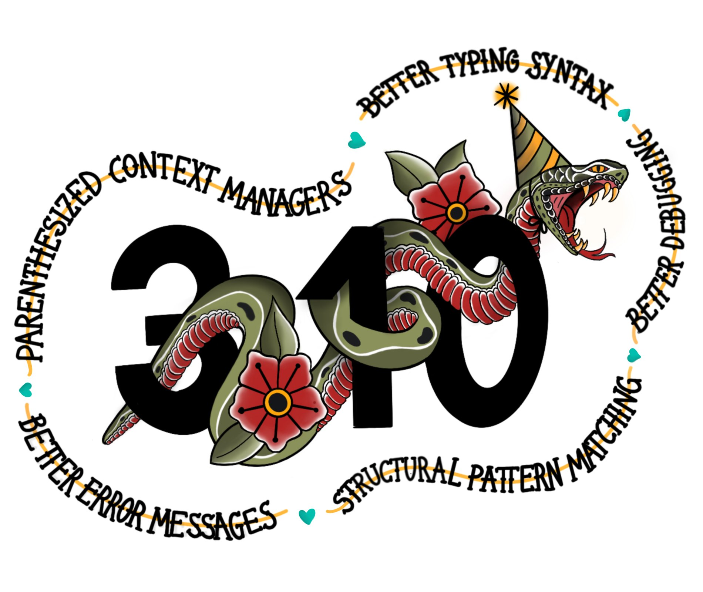

Python 3.10 and beyond
Alex PRENGERE
Introduction
- Python is the language, created in 1991 by Guido Van Rossum
- CPython is the reference interpreter (a C program that executes Python code)
- Many independent Python interpreters: PyPy, MicroPython, IronPython, Jython
Also, Python is now ranked #1 in the Tiobe index :P
Organization (since 2019)
Big changes require a PEP: Python Enhancement Proposal.
- Core developers develop CPython and manage Python
- A steering council of 5 people make final decisions (elected for each release)
- A release manager is elected, and manages 2 releases
2021 Steering Council
- Barry Warsaw (LinkedIn)
- Brett Cannon (Microsoft)
- Carol Willing (Noteable)
- Pablo Galindo Salgado (Bloomberg)
- Thomas Wouters (Google)
Release manager: Pablo Galindo Salgado
Other important bodies
PyPA
The Python Packaging Authority (PyPA) is a working group that maintains a core set of software projects used in Python packaging.
PSF
The Python Software Foundation (PSF) is a non-profit corporation that holds the intellectual property rights behind the Python programming language.
Also: organizes PyCon US, support other Python conferences, funding.
Releasing
A new release every year.
Annual release cadence (since 2019)
A release branch is created in May, the release is in October.

How to try Python3.10
Compile it from sources!
git clone https://github.com/python/cpython.git cd cpython git checkout v3.10.0 ./configure [--enable-optimizations] make sudo make altinstall # install python3.10 to /usr/local/bin/
How to use Python3.10 in your CI
To test Python3.10 with tox, add py310 to your tox.ini
For GitHub actions: python-version: ["3.10"].
New features of Python 3.10
- performance improvements
- improved error messages
- structural pattern matching
- typing improvements
- many other things
Improved error messages
Pre-3.10, most syntax errors produce a useless:
SyntaxError: EOL while scanning string literal
Now, any unclosed "{([ produce a clear error:
print("Hello, World!)
^
SyntaxError: unterminated string literal (detected at line 3)
Improved error messages
Another example: missing commas.
months = {
10: "October"
11: "November",
12: "December",
}
This will produce a clear error:
10: "October"
^^^^^^^^^
SyntaxError: invalid syntax. Perhaps you forgot a comma?
Improved error messages
Another example: typos.
>>> pint NameError: name 'pint' is not defined. Did you mean: 'print'?
Structural Pattern Matching
New syntax!
This means you cannot use it in libraries that need to support pre-3.10.
Structural Pattern Matching
Literal pattern and capture patterns.
command = "mv" match command: case "cp": print("Executing copy") case "mv": print("Executing move") case another: print(f"Executing {another}")
Structural Pattern Matching
Sequence pattern.
command = "mv src dst" match command.split(): case [action]: ... case [action, obj]: ... case [action, arg1, arg2]: # matches! ...
Structural Pattern Matching
Wildcard pattern.
command = "ls src dst" match command.split(): case ["ls"]: ... case ["mv", src, dst]: ... case _: # matches! ...
Structural Pattern Matching
OR pattern.
command = "ls" match command.split(): case ["ls"] | ["cd"]: # matches! ... case ["mv", src, dst]: ... case _: ...
Structural Pattern Matching
Sub-patterns.
command = "cd west" match command.split(): case ["cd", ("north" | "south" | "east" | "west")]: ...
Structural Pattern Matching
AS pattern.
command = "cd west" match command.split(): case ["cd", ("north" | "south" | "east" | "west") as direction]: print(direction)
Structural Pattern Matching
Conditions.
command = "cd WEST" match command.split(): case ["cd", direction] if direction.isupper(): print(direction)
Structural Pattern Matching
Value pattern (careful here, dotted names are necessary).
class Alias: copy = "cp" move = "mv" command = "cp" match command: case Alias.move: ... case Alias.copy: # matches! ... case _: ...
Structural Pattern Matching
Mapping pattern.
action = {"sleep": 1, "text": "Hello"} match action: case {"text": message, "color": c}: ... case {"sleep": duration}: # matches ...
Structural Pattern Matching
Class pattern.
obj = 1 / 3 match obj: case str(): ... case int(): ... case float(): # matches ... case CustomClass(): ...
Structural Pattern Matching
- Capture patterns bind values to names.
- Wildcard patterns match anything.
- Literal patterns match literal values.
- OR patterns match one of several different subpatterns.
- AS patterns bind the value of subpatterns to names.
- Sequence patterns match sequence structures like tuples and lists.
- Value patterns match values stored in attributes.
- Mapping patterns match mapping structures like dictionaries.
- Class patterns match class structures.
Typing improvements
Optional static typing are "comments" that have (almost) no effect on the runtime.
Useful for static analysis tools like mypy, pyre-check (Facebook), pytype (Google).
def show_total(a: int, b: int) -> str: total: int = a + b return f"{a} + {b} = {total}" show_total(1, 2.5) # runs fine, but is a mypy error
Type Unions
typing.Union is no longer needed: replaced by a pipe.
# Before # from typing import Union def mean(numbers: list[Union[float, int]]) -> float: return sum(numbers) / len(numbers) # After # def mean(numbers: list[float | int]) -> float: return sum(numbers) / len(numbers)
Type Unions
Bonus, this works too.
isinstance(number, float | int) issubclass(str, int | float | bytes)
Type Unions
Optional is no longer needed.
# Before # from typing import Optional Optional[str] # After # str | None
Typing improvements
- typing.TypeAlias to signal an alias for a type
- typing.TypeGuard to help with narrowing union types
- typing.ParamSpec to represent a callable arguments
stdlib typing has a backport for Python3.5+ available on PyPI: typing_extensions
And the rest
The smaller stuff.
Strict zip
zip has a new strict option, raising ValueError when input have different lengths.
>>> list(zip([1, 2, 3], ["A", "B"], strict=True)) Traceback (most recent call last): File "<stdin>", line 1, in <module> ValueError: zip() argument 2 is shorter than argument 1
New functions in statistics
statistics was introduced in 3.4, contains stats functions like mean, median, stdev.
New additions:
- correlation() to calculate Pearson’s correlation coefficient for two variables
- covariance() to calculate sample covariance for two variables
- linear_regression() to calculate the slope and intercept in a linear regression
Text Encodings
You should always specify explicit encodings.
with open("file.txt", encoding="utf-8") as file: ...
To check this, there is a new warning that you can enable.
$ python -X warn_default_encoding
>>> open("file.txt")
<stdin>:1: EncodingWarning: 'encoding' argument not specified
sys.orig_argv
sys.orig_argv keeps the options passed to the interpreter.
$ python -X utf8 -O argvs.py 3.10 --upgrade # # sys.argv: # ['argvs.py', '3.10', '--upgrade'] # # sys.orig_argv: # ['python', '-X', 'utf8', '-O', 'argvs.py', '3.10', '--upgrade']
And beyond!
Let's talk about the future (3.11+).
And beyond!
- enhanced error locations in tracebacks
- PEP 654: exception groups
- from __future__ import annotations by default
- the Mark Shannon plan for faster CPython
- the Sam Gross no-GIL proof of concept
Improved tracebacks
Even better error messages with improved tracebacks.
Traceback (most recent call last): File "calculation.py", line 54, in <module> result = (x / y / z) * (a / b / c) ~~~~~~^~~ ZeroDivisionError: division by zero
Exception groups
Exception groups: raising and catching multiple exceptions at once.
try: raise ExceptionGroup("msg", [ValueError, TypeError]) # BOTH clause will be executed, unlike regular 'except' except* ValueError: ... except* TypeError: ...
Type annotations
Example of forward reference issue:
class A: def f(self: A): # <- A is not yet defined pass
With "from __future__ import annotations", annotations are stored as strings.
Faster CPython
Performance is now a hot topic.
Microsoft has recruited Guido and several others to work on this.
Faster CPython
- Stage 1 -- Python 3.10: adaptive, specializing interpreter
- Stage 2 -- Python 3.11: improvements to the runtime and key objects
- Stage 3 -- Python 3.12: simple "JIT" compiler for small regions
- Stage 4 -- Python 3.13: extend regions for compilation
Goal: 5x performance in 4 years
Sam Gross no-GIL
The Python Global Interpreter Lock or GIL, in simple words, is a mutex (or a lock) that allows only one thread to hold the control of the Python interpreter.
This means that only one thread can be in a state of execution at any point in time.
Sam Gross no-GIL
CPython experiment by Sam Gross who:
- reworked the reference counting
- changed the memory allocator
- reworked the garbage collection to be thread-safe
- changed list & dict implementations to be thread-safe
- removed the GIL (!)
No major performance hit on single-thread workloads.
Some impressive benchmarks: 18.1x speed-up on "pi calculation".
Questions?
Backup
PEP 8016: Core developers
- elected for life by 2/3 of positive votes and no veto by Steering Council
- can modify PEP 8016 by 2/3 of the vote
- can be declared inactive after 2 years of inactivity, and loose nomination, voting, and committing rights
- can regain their active status
PEP 8016: Steering Council
- 5 people elected using Condorcet method, by the core developers
- candidates must be nominated by a core developer, and can themselves be core developer or not
- a term last for a feature release
- no more than 2 people working for the same employer
PEP 8016: Steering Council powers
- Accept or reject PEPs
- Enforce or update the project's code of conduct
- Work with the PSF to manage any project assets
- Delegate parts of their authority to other subcommittees or processes
PEP 602: annual release cadence
- One feature release every year
- 7 months alphas, 3 months betas (only bug fixes), 2 months release candidates
- 1.5 years of bug fixes updates, 3.5 years of security updates (source only)
- a release manager is elected to manage 2 feature releases and their maintenance releases
PEP 602: annual release cadence
- makes releases smaller
- puts features and bug fixes in hands of users sooner
- creates a more gradual upgrade path for users
- creates a predictable calendar for releases where the final release is always in October
- increases the explicit alpha release phase, which provides meaningful snapshots of progress on new features
Communication channels
- python-committers, python-dev, python-ideas, typing-sig mailing lists
- discuss.python.org forum (more recently)
- CPython sources are now on GitHub
- Bug tracker is at bugs.python.org aka "bpo"
History of changes
Python 3.5 (2015)
- PEP 492: async and await are new keywords
- PEP 465: @ is new operator for matrix multiplication: a @ b (__matmul__)
- PEP 484: new typing module
Python 3.6 (2016)
- PEP 506: new secrets module
- PEP 498: formatted string literals: f'Next year is {1 + today().year}'
- PEP 515: underscores in numeric literals: 1_000_000
- PEP 526: syntax for variable annotations: a: Dict[int, int] = {}
- PEP 525: asynchronous generators: async in generators
- PEP 530: asynchronous comprehensions: async in comprehensions
- Multiple speed optimizations
Python 3.7 (2018)
- PEP 563: postponed evaluation of type annotations
- PEP 567: Context Variables
- PEP 557: Data Classes
- PEP 553: the new breakpoint() function.
- PEP 562: customization of access to module attributes.
- PEP 560: core support for typing module and generic types.
- dicts are sorted
Python 3.8 (2019)
- PEP 8016: the Steering Council model
- PEP 572: assignment expressions: while block := f.read(256):
- PEP 570: positional only parameters def f(a, /, b, *, c):
- PEP 578: Python Runtime Audit Hooks
- PEP 587: Python Initialization Configuration
- PEP 574: pickle protocol 5 with out-of-band data
- multiple speed optimizations (C API, global variables access)
- stdlib additions: statistics, math, functools, asyncio, importlib
Python 3.9 (2020)
- PEP 602: Python adopts a stable annual release cadence
- PEP 584: add Union Operators To dict
- PEP 585: type Hinting Generics In Standard Collections
- PEP 617: new PEG parser for CPython
- PEP 616: new removeprefix() and removesuffix() string methods
- PEP 615: support for the IANA Time Zone Database in the Standard Library
- graphlib that contains the graphlib.TopologicalSorter
Python 3.10 (2021)
- PEP 626: precise line numbers for debugging and other tools
- PEP 634-636: Structural Pattern Matching
- PEP 604: allow writing union types as X | Y
- PEP 613: explicit type aliases
- PEP 647: user-defined type guards
- PEP 612: parameter specification variables
- PEP 618: add optional length-checking to zip
Type Aliases
TypeAlias signals to type checker that a variable is a type alias.
# Before # Card = tuple[str, str] Deck = list[Card] # After # from typing import TypeAlias Card: TypeAlias = tuple[str, str] Deck: TypeAlias = list[Card]
Type Guards
mypy understands this.
def get_ace(suit: str | None) -> tuple[str, str]: # here suit can be either str or None if suit is None: # narrowing the union type suit = "DIAMOND" # here the type checker knows that suit has to be a string, # so the return type is OK return (suit, "ACE")
Type Guards
mypy not happy: got "Tuple[Optional[str], str]", expected "Tuple[str, str]")
def is_a_str(suit: str | None) -> bool: # This function acts as a guard, it return True if input is a str. return suit is not None def get_ace(suit: str | None) -> tuple[str, str]: if not is_a_str(suit): suit = "DIAMOND" return (suit, "ACE")
Type Guards
mypy now happy because TypeGuard explains the output semantics.
def is_a_str(suit: str | None) -> TypeGuard[str]: # This function acts as a guard, it return True if input is a str. return suit is not None def get_ace(suit: str | None) -> tuple[str, str]: if not is_a_str(suit): suit = "DIAMOND" return (suit, "ACE")
ParamSpec
Imprecise annotation of a decorator.
import functools from typing import Any, Callable, TypeVar R = TypeVar("R") def decorator(func: Callable[..., R]) -> Callable[..., R]: @functools.wraps(func) def wrapper(*args: Any, **kwargs: Any) -> R: ... return wrapper
ParamSpec
Correct annotation of a decorator.
import functools from typing import Callable, ParamSpec, TypeVar P = ParamSpec("P") R = TypeVar("R") def decorator(func: Callable[P, R]) -> Callable[P, R]: @functools.wraps(func) def wrapper(*args: P.args, **kwargs: P.kwargs) -> R: ... return wrapper
Context managers
You can put parenthesis when using multiple context managers.
# Before with read_path.open(mode="r", encoding="utf-8") as read_file, \ write_path.open(mode="w", encoding="utf-8") as write_file: ... # After with ( read_path.open(mode="r", encoding="utf-8") as read_file, write_path.open(mode="w", encoding="utf-8") as write_file, ):